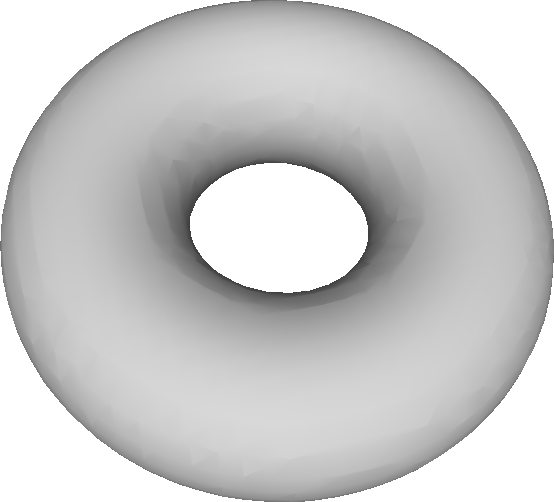

Demos
Note in these code listings that there is no need to load submodules of the library, as all the classes and functions in the submodules are made visible as part of the package geomproc.
Load a mesh and visualize normal vectors
test_mesh.py
# Load a mesh and compute some geometric information
# Import the geometry processing library
import geomproc
# Load and normalize the mesh
tm = geomproc.load('meshes/bunny.obj')
tm.normalize()
# Save normalized mesh
tm.save('output/bunny_normalized.obj')
# Compute normal vectors
tm.compute_vertex_and_face_normals()
# Create geometry for normals
# Vertex normals
vn = geomproc.create_vectors(tm.vertex, tm.vnormal, color=[0, 0, 1])
# Face normals
centroid = (tm.vertex[tm.face[:, 0], :] + \
tm.vertex[tm.face[:, 1], :] + \
tm.vertex[tm.face[:, 2], :])/3.0
fn = geomproc.create_vectors(centroid, tm.fnormal, color=[1, 0, 0])
# Save the meshes for normals
wo = geomproc.write_options()
wo.write_vertex_colors = True
vn.save('output/bunny_vnormal.obj', wo)
fn.save('output/bunny_fnormal.obj', wo)
# Combine all geometries into one, if needed
#tm.append(vn)
#tm.append(fn)
#tm.save('output/bunny_all.obj', wo)
Result: bunny with vertex normals (blue) and face normals (red)
{kind=link}
Visualize mesh degree
test_degree.py
# Color a mesh according to the degrees of its vertices
# Import the geometry processing library
import geomproc
# Import numpy for creating data arrays
import numpy as np
# Load and normalize the mesh
tm = geomproc.load('meshes/bunny.obj')
tm.normalize()
# Compute connectivity information
tm.compute_connectivity()
# Collect vertex degrees
degree = np.zeros(tm.vertex.shape[0])
for i in range(tm.vertex.shape[0]):
degree[i] = len(tm.viv[i])
# Color the mesh according to degrees
tm.data_to_color(degree, True, 0)
# Save the mesh
wo = geomproc.write_options()
wo.write_vertex_colors = True
tm.save('output/bunny_degree.obj', wo)
Result: deviation from degree 6 shown with colors
{kind=link}
Curvature computation
Curvature comparison on various primitive surfaces: test_curvature.py
# Compute curvature values for a variety of analytical shapes
#
# Use the results to compare curvature values computed analytically to
# curvature values computed from the mesh
# Import geometry processing library
import geomproc
# Import os library for checking the output directory
import os
# Check if output directory exists
if not os.path.isdir('curv'):
os.mkdir('curv')
# Set up write_option to save vertex colors
wo = geomproc.write_options()
wo.write_vertex_colors = True
# Cylinder
if 1: # Change if statement to 0 to disable this block
cylinder = geomproc.create_cylinder(0.5, 1, 60, 10)
cylinder.data_to_color_with_zero(cylinder.curv[:, 2])
cylinder.save('curv/cylinder_mean_analytic.obj', wo)
cylinder.data_to_color_with_zero(cylinder.curv[:, 3])
cylinder.save('curv/cylinder_gaussian_analytic.obj', wo)
cylinder2 = cylinder.copy()
cylinder2.compute_curvature()
cylinder2.data_to_color_with_zero(cylinder2.curv[:, 2])
cylinder2.save('curv/cylinder_mean_discrete.obj', wo)
cylinder2.data_to_color_with_zero(cylinder2.curv[:, 3])
cylinder2.save('curv/cylinder_gaussian_discrete.obj', wo)
# Sphere
if 1:
sphere = geomproc.create_sphere(0.5, 30, 30)
sphere.data_to_color_with_zero(sphere.curv[:, 2])
sphere.save('curv/sphere_mean_analytic.obj', wo)
sphere.data_to_color_with_zero(sphere.curv[:, 3])
sphere.save('curv/sphere_gaussian_analytic.obj', wo)
sphere2 = sphere.copy()
sphere2.compute_curvature()
sphere2.data_to_color_with_zero(sphere2.curv[:, 2])
sphere2.save('curv/sphere_mean_discrete.obj', wo)
sphere2.data_to_color_with_zero(sphere2.curv[:, 3])
sphere2.save('curv/sphere_gaussian_discrete.obj', wo)
# Cone
if 1:
cone = geomproc.create_cone(0.5, 1, 60, 10)
cone.data_to_color_with_zero(cone.curv[:, 2])
cone.save('curv/cone_mean_analytic.obj', wo)
cone.data_to_color_with_zero(cone.curv[:, 3])
cone.save('curv/cone_gaussian_analytic.obj', wo)
cone2 = cone.copy()
cone2.compute_curvature()
cone2.data_to_color_with_zero(cone2.curv[:, 2])
cone2.save('curv/cone_mean_discrete.obj', wo)
cone2.data_to_color_with_zero(cone2.curv[:, 3])
cone2.save('curv/cone_gaussian_discrete.obj', wo)
# Torus
if 1:
torus = geomproc.create_torus(1.0, 0.33, 90, 30)
torus.data_to_color_with_zero(torus.curv[:, 2])
torus.save('curv/torus_mean_analytic.obj', wo)
torus.data_to_color_with_zero(torus.curv[:, 3])
torus.save('curv/torus_gaussian_analytic.obj', wo)
torus2 = torus.copy()
torus2.compute_curvature()
torus2.data_to_color_with_zero(torus2.curv[:, 2])
torus2.save('curv/torus_mean_discrete.obj', wo)
torus2.data_to_color_with_zero(torus2.curv[:, 3])
torus2.save('curv/torus_gaussian_discrete.obj', wo)
# Saddle
if 1:
saddle = geomproc.create_open_surface(30, 30, 1)
saddle.data_to_color_with_zero(saddle.curv[:, 2])
saddle.save('curv/saddle_mean_analytic.obj', wo)
saddle.data_to_color_with_zero(saddle.curv[:, 3])
saddle.save('curv/saddle_gaussian_analytic.obj', wo)
saddle2 = saddle.copy()
saddle2.compute_curvature()
saddle2.data_to_color_with_zero(saddle2.curv[:, 2])
saddle2.save('curv/saddle_mean_discrete.obj', wo)
saddle2.data_to_color_with_zero(saddle2.curv[:, 3])
saddle2.save('curv/saddle_gaussian_discrete.obj', wo)
# Monkey saddle
if 1:
monkey_saddle = geomproc.create_open_surface(30, 30, 2)
monkey_saddle.data_to_color_with_zero(monkey_saddle.curv[:, 2])
monkey_saddle.save('curv/monkey_saddle_mean_analytic.obj', wo)
monkey_saddle.data_to_color_with_zero(monkey_saddle.curv[:, 3])
monkey_saddle.save('curv/monkey_saddle_gaussian_analytic.obj', wo)
monkey_saddle2 = monkey_saddle.copy()
monkey_saddle2.compute_curvature()
monkey_saddle2.data_to_color_with_zero(monkey_saddle2.curv[:, 2])
monkey_saddle2.save('curv/monkey_saddle_mean_discrete.obj', wo)
monkey_saddle2.data_to_color_with_zero(monkey_saddle2.curv[:, 3])
monkey_saddle2.save('curv/monkey_saddle_gaussian_discrete.obj', wo)
Curvature comparison on a shape with and without noise: test_curvature_with_noise.py
# Compute curvature values for a given mesh and its noisy version
# Import the geometry processing library
import geomproc
# Import os library for checking the output directory
import os
# Check if output directory exists
if not os.path.isdir('curv'):
os.mkdir('curv')
# Load and normalize the mesh
tm = geomproc.load('meshes/bunny.obj')
tm.normalize()
# Compute curvature of the mesh
tm.compute_vertex_and_face_normals()
tm.compute_curvature()
# Set up write_option to save vertex colors
wo = geomproc.write_options()
wo.write_vertex_colors = True
# Save curvature information as colors of a mesh
[mn, mx] = tm.data_to_color_with_zero(tm.curv[:, 3], percent=0.1)
tm.save('curv/bunny_gaussian_discrete.obj', wo)
# Add noise to the mesh
tm.add_noise(0.02);
# Recompute curvature of the mesh
# Note: we also need to recompute normals
tm.compute_vertex_and_face_normals()
tm.compute_curvature()
# Save curvature information as colors of a mesh
tm.data_to_color_with_zero(tm.curv[:, 3], percent=0.1, minimum=mn, maximum=mx)
tm.save('curv/bunny_with_noise_gaussian_discrete.obj', wo)
Result: curvature plot on bunny without and with noise
{kind=link}
{kind=link}
Mesh smoothing
With averaging method: test_smoothing.py
# Smooth a mesh with an averaging algorithm
# Import geometry processing library
import geomproc
# Import numpy for data arrays
import numpy as np
# Load the mesh
tm = geomproc.load('meshes/bunny.obj')
# Compute connectivity information
tm.compute_connectivity()
# Perform smoothing
num_iterations = 5;
# Temporary holder for smoothed vertex positions
smooth = np.zeros(tm.vertex.shape)
# Smoothing iterations
for it in range(num_iterations):
# Smooth each vertex
for vi in range(tm.vertex.shape[0]):
# Save averaged position
smooth[vi, :] = np.average(tm.vertex[tm.viv[vi], :], axis=0)
# Update all vertex position with averaged positions
tm.vertex = smooth.copy()
# Save the mesh
wo = geomproc.write_options()
tm.save('output/bunny_smooth.obj', wo)
With Laplacian operator: test_smoothing_with_operator.py
# Smooth a mesh with the Laplacian operator
# Import geometry processing library
import geomproc
# Import numpy for data arrays
import numpy as np
# Load the mesh
tm = geomproc.load('meshes/bunny.obj')
tm.normalize()
# Compute connectivity information
tm.compute_connectivity()
# Perform smoothing with different operators
lap_types = ['uniform', 'geometric']
for j in range(len(lap_types)):
# Build operator
if j == 0:
L = tm.uniform_laplacian()
else:
[L, negative, boundary] = tm.geometric_laplacian()
# Apply operator
num_iterations = 20
for i in range(num_iterations):
tm.vertex += np.dot(L, tm.vertex)
# Save resulting mesh
tm.save('output/bunny_smooth_' + lap_types[j] + '.obj')
Result: smooth bunny obtained with uniform and geometric Laplacians
{kind=link}
{kind=link}
Mesh parameterization
test_tutte_embedding.py
# Demo of computing a parameterization with Tutte's embedding
# Import geometry processing library
import geomproc
# Import numpy for data arrays
import numpy as np
# Import math for miscellaneous mathematical functions
import math
def map_boundary_to_circle(tm, bnd):
"""Map the vertices of a boundary to a circle in the given order
Parameters
----------
tm : mesh
Mesh object for the input shape
bnd : array_like
List of vertices representing the boundary to be used for the
parameterization
Returns
-------
u : array_like
Array of shape n x 2, where n is the number of vertices in the
mesh. The array holds the 2D coordinates of each vertex of the
boundary mapped to a circle. Vertices that are not on the
boundary are assigned a coordinate [0, 0]
Notes
-----
The method maps a list of vertices along a boundary to a circle of
radius 0.5 centered at (0.5, 0.5), so that the entire mesh fits
within the range [0:1, 0:1] required for texture coordinates. The
list of boundary vertices has to be given in sequential order around
the boundary.
"""
# Get length of the boundary
lgt = bnd.shape[0]
# Initialize output coordinates
u = np.zeros((tm.vertex.shape[0], 2))
# Specify points along a circle
increment = (2*math.pi)/(lgt-1)
for i in range(lgt):
u[bnd[i], :] = [0.5*math.cos(i*increment) + 0.5, 0.5*math.sin(i*increment) + 0.5]
return u
def param_matrix(tm, lap_type, bnd):
"""Create the matrix needed for Tutte embedding based on the given boundary
Parameters
----------
tm : mesh
Mesh object for the input shape
lap_type : string
The type of Laplacian operator used for creating the
parameterization matrix. It can be either 'uniform' or
'geometric'
bnd : array_like
List of vertices representing the boundary to be used for the
parameterization
Returns
-------
A : array_like
Parameterization matrix that can be used for computing a Tutte
embedding
Notes
-----
The method builds a matrix that can be used for computing a Tutte
parameterization of a mesh. The vertices on the boundary are fixed
to positions around a circle, while other vertices are constrained
according to the operator.
"""
# Select the type of operator to use and create corresponding matrix
if lap_type == 'uniform':
A = tm.uniform_laplacian()
elif lap_type == 'geometric':
[A, negative, boundary] = tm.geometric_laplacian()
else:
raise RuntimeError('Invalid type of Laplacian specified: '+str(lap_type))
# Transform the operator into a parameterization matrix
for i in range(len(bnd)):
A[bnd[i], :] = 0
A[bnd[i], bnd[i]] = 1
return A
def tutte_embedding(tm, lap_type, bnd):
"""Compute Tutte embedding of a mesh according to a given Laplacian
Parameters
----------
tm : mesh
Mesh object for the input shape
lap_type : string
The type of Laplacian operator used for creating the
parameterization matrix. It can be either 'uniform' or
'geometric'
bnd : array_like
List of vertices representing the boundary to be used for the
parameterization
Returns
-------
u : array_like
Array of shape n x 2, where n is the number of vertices in the
mesh. Each row of the array represents the 2D coordinates of a
vertex in the parameterization
A : array_like
Parameterization matrix used for computing the Tutte embedding
constr : array_like
Right-hand side constraints used for solving the linear system
"""
# Map vertices along boundary to a circle of radius 0.5 centered at
# (0.5, 0.5), so that the entire mesh fits within the range [0:1,
# 0:1] required for texture coordinates
constr = map_boundary_to_circle(tm, bnd)
# Create matrix for linear system
A = param_matrix(tm, lap_type, bnd)
# Solve linear systems for u and v coordinates
u = np.zeros((tm.vertex.shape[0], 3))
u[:, 0] = np.linalg.solve(A, constr[:, 0])
u[:, 1] = np.linalg.solve(A, constr[:, 1])
# Third coordinate is left as all zeros, so that we can save the mesh
# Return parameterized coordinates
return [u, A, constr]
# Main function
# Specify input mesh
mesh_name = 'crater'
#mesh_name = 'beetle'
#mesh_name = 'bunny'
#mesh_name = 'camel_cut'
# Set input and output filenames
input_mesh = 'meshes/' + mesh_name + '.obj'
input_boundary = 'meshes/' + mesh_name + '.bnd'
output_prefix_texture = 'output/' + mesh_name + '_textured'
output_prefix_param = 'output/' + mesh_name + '_param'
output_prefix_boundary = 'output/' + mesh_name + '_boundary'
# Load and normalize mesh
tm = geomproc.load(input_mesh)
tm.normalize()
# Load boundary
bnd = np.loadtxt(input_boundary)
bnd = bnd.astype(int)
# Initialize write options
wo = geomproc.write_options()
# Compute parameterizations with different operators
lap_types = ['uniform', 'geometric']
for lap_type in lap_types:
# Compute Tutte embedding
[u, A, constr] = tutte_embedding(tm, lap_type, bnd)
# Save mesh with the boundary highlighted
tm.vcolor = np.ones((tm.vertex.shape[0], 3))
tm.vcolor[bnd, :] = [1, 0, 0]
wo.write_vertex_colors = True
tm.save(output_prefix_boundary + '_' + lap_type + '.obj', wo)
tm.vcolor = np.zeros((0, 3)) # Reset colors
wo.write_vertex_colors = False # Reset this flag
# Save textured mesh
tm.vuv = u[:, 0:2]
wo.write_vertex_uvs = True
wo.texture_name = 'pattern.png'
tm.save(output_prefix_texture + '_' + lap_type + '.obj', wo)
tm.vuv = np.zeros((0, 2)) # Reset this field
wo.write_vertex_uvs = False # Reset this flag
wo.texture_name = ''
# Save mesh parametrized to 2D
param_tm = tm.copy()
param_tm.vertex = u # Assign parameterized coordinates
param_tm.save(output_prefix_param + '_' + lap_type + '.obj', wo)
# Save operator
#output_prefix_operator = mesh_name + '_matrix'
#np.savetxt(output_prefix_operator + '_' + lap_type + '.txt', A)
Result: parameterization of Crater Lake and texture mapping
{kind=link}
{kind=link}
{kind=link}
Sample a mesh
test_sample.py
# Load and sample a mesh
import geomproc
# Load and normalize the mesh
tm = geomproc.load('meshes/bunny.obj')
tm.normalize()
# Save normalized mesh
tm.save('output/bunny_normalized.obj')
# Compute normal vectors
tm.compute_vertex_and_face_normals()
# Sample the mesh
num_samples = 1000
pc = tm.sample(num_samples)
# Save just the samples
wo = geomproc.write_options()
wo.write_point_normals = True
pc.save('output/bunny_only_samples.obj', wo)
# Save the samples as geometry that can be visualized
wo = geomproc.write_options()
wo.write_vertex_colors = True
points = geomproc.create_points(pc.point, 0.01)
points.save('output/bunny_samples.obj', wo)
Estimate normals of a point cloud
test_normal.py
# Compute normals of a point cloud
import geomproc
import numpy as np
# Load and normalize the mesh
tm = geomproc.load('meshes/bunny.obj')
tm.normalize()
# Compute normal vectors
tm.compute_vertex_and_face_normals()
# Sample the mesh
num_samples = 10000
pc = tm.sample(num_samples)
# Estimate normals
pc_est = pc.copy()
pc_est.estimate_normals_simple(10)
# Calculate errors between real and estimated normals
dist = (pc.normal - pc_est.normal)**2
dist = np.sum(dist, axis=1)
dist = np.sqrt(dist)
mn = dist.min()
mx = dist.max()
arg_mn = dist.argmin()
arg_mx = dist.argmax()
print('Simple normal estimation')
print('Minimum error: '+str(mn)+' for normals '+str(pc.normal[arg_mn, :])+' and '+str(pc_est.normal[arg_mn, :])+' at index '+str(arg_mn))
print('Maximum error: '+str(mx)+' for normals '+str(pc.normal[arg_mx, :])+' and '+str(pc_est.normal[arg_mx, :])+' at index '+str(arg_mx))
# Estimate normals
pc_est2 = pc.copy()
pc_est2.estimate_normals(10)
# Calculate errors between real and estimated normals
dist2 = (pc.normal - pc_est2.normal)**2
dist2 = np.sum(dist2, axis=1)
dist2 = np.sqrt(dist2)
mn2 = dist2.min()
mx2 = dist2.max()
arg_mn2 = dist2.argmin()
arg_mx2 = dist2.argmax()
print('Normal estimation with flipping')
print('Minimum error: '+str(mn2)+' for normals '+str(pc.normal[arg_mn2, :])+' and '+str(pc_est.normal[arg_mn2, :])+' at index '+str(arg_mn2))
print('Maximum error: '+str(mx2)+' for normals '+str(pc.normal[arg_mx2, :])+' and '+str(pc_est.normal[arg_mx2, :])+' at index '+str(arg_mx2))
if 1:
import matplotlib.pyplot as plt
fig, ax = plt.subplots(2)
ax[0].hist(dist, 20)
ax[1].hist(dist2, 20)
plt.show()
# Vertex normals
if 0:
pnt = geomproc.create_points(pc.point, radius=0.01, color=[1, 0, 0])
vec = geomproc.create_vectors(pc.point, pc.normal, color=[1, 0, 0])
vec2 = geomproc.create_vectors(pc.point, pc_est.normal, color=[0, 0, 1])
vec3 = geomproc.create_vectors(pc.point, pc_est2.normal, color=[0, 1, 0])
pnt.append(vec)
pnt.append(vec2)
pnt.append(vec3)
# Save the mesh
wo = geomproc.write_options()
wo.write_vertex_colors = True
pnt.save('output/bunny_nv.obj', wo)
# Save samples
#pc.save('output/bunny_samples.ply')
Align two point clouds
With the ICP method: test_icp.py
# Align two point clouds with the ICP algorithm
# Import the geometry processing library
import geomproc
# Import numpy for data arrays
import numpy as np
# Math functions
import math
# Default setting: 1000 points and 50 iterations
#
# Things to try:
# - A Completely random transformation
# - A different set of samples for pc2 (call tm.sample() again)
# - Estimate normals instead of using mesh normals
# - More points and iterations
#### Create a point sample for the test
# Load and normalize the mesh
tm = geomproc.load('meshes/bunny.obj')
tm.normalize()
# Sample a set of points from the surface of the mesh
n = 1000
pc1 = tm.sample(n)
# Apply a transformation to pc1 to create pc2
# Define the transformation
if False: # Choose the transformation by switching True/False
# Choose a completely random transformation
orig_rot = geomproc.rotation_random()
orig_trans = geomproc.translation_random()
else:
# Choose a specific rotation around the y axis
angle = math.pi/3
orig_rot = geomproc.rotation_y(angle)
orig_trans = geomproc.translation(0, 0, 0)
# Apply the transformation to pc1 to create the second point cloud pc2
pc2 = pc1.copy()
# For a more realistic example, pc2 could be another set of samples
# pc2 = tm.sample(n)
pc2.point = geomproc.apply_transformation(pc2.point, orig_rot, orig_trans)
# Save input data
tm.save('output/bunny_normalized.obj')
pc1.save('output/bunny_sample1.obj')
pc2.save('output/bunny_sample2.obj')
#### Align the point clouds
# Run the ICP method
error_threshold = 0.01
num_iters = 50
[rot, trans, pc1tr, err, iter_count, corr] = geomproc.icp(pc1, pc2, error_threshold, num_iters, 0.8)
# Save registration
pc1tr.save('output/bunny_sample1aligned.obj')
# Save final correspondence so that we can see it
if True: # Turn on/off with True/False
# Create lines to indicate the correspondences
line = np.zeros((pc1.point.shape[0], 6))
for i in range(corr.shape[0]):
line[i, :] = np.concatenate((pc1tr.point[corr[i, 0], :], pc2.point[corr[i, 1], :]))
cl = geomproc.create_lines(line, color=[0.7, 0.7, 0.7])
# Create points for the point sets
pt1 = geomproc.create_points(pc1tr.point, color=[1, 0, 0])
pt2 = geomproc.create_points(pc1.point, color=[0, 1, 0])
pt3 = geomproc.create_points(pc2.point, color=[0, 0, 1])
# Combine everything together
result = geomproc.mesh()
result.append(cl)
result.append(pt1)
result.append(pt2)
result.append(pt3)
# Save the mesh
wo = geomproc.write_options()
wo.write_vertex_colors = True
result.save('output/bunny_corr.obj', wo)
# Print some information
print('Original transformation = ')
print(orig_rot)
print(orig_trans)
print('Alignment result = ')
print(rot)
print(trans)
print('Number of iterations used = ', iter_count)
print('Error after alignment = ', err)
Result: green samples transformed to red samples to align with blue samples
{kind=link}
With descriptor matching: test_spin_images.py
# Align two point clouds with descriptor matching
# Import the geometry processing library
import geomproc
# Import numpy for data arrays
import numpy as np
# Math functions
import math
#### Create point samples for the test
# Load and normalize the mesh
tm1 = geomproc.load('meshes/bunny.obj')
tm1.normalize()
# Apply a transformation to the mesh to create a misaligned version
# Define the transformation
if False: # Choose the transformation by switching True/False
# Choose a completely random transformation
rnd = np.random.random((3, 3))
[q, r] = np.linalg.qr(rnd)
orig_rot = q
orig_trans = np.random.random((3, 1))
else:
# Choose a specific rotation around the y axis
angle = math.pi/3
orig_rot = np.array([[math.cos(angle), 0, math.sin(angle)],
[0, 1, 0],
[-math.sin(angle), 0, math.cos(angle)]])
orig_trans = np.zeros((3, 1))
# Copy the mesh and apply the transformation to the mesh
tm2 = tm1.copy()
tm2.vertex = geomproc.apply_transformation(tm1.vertex, orig_rot, orig_trans)
# Update normals: important! As the spin images descriptor depends on them
tm2.compute_vertex_and_face_normals()
# Sample two sets of points from the surfaces of the meshes
n1 = 1000 # We are going to compute a descriptor for each of these points
n2 = 10000 # We are going to use these points only for reference in the descriptor computation
pc1 = tm1.sample(n1)
pc1full = tm1.sample(n2)
pc2 = tm2.sample(n1)
pc2full = tm2.sample(n2)
# Save input data
tm1.save('output/bunny_normalized.obj')
pc1.save('output/bunny_sample1.obj')
pc2.save('output/bunny_sample2.obj')
#### Align the point clouds
# Compute the spin images descriptor for the two point clouds
opt = geomproc.spin_image_options()
desc1 = geomproc.spin_images(pc1, pc1full, opt)
desc2 = geomproc.spin_images(pc2, pc2full, opt)
# Match the descriptors
corr = geomproc.best_match(desc1, desc2)
corr = geomproc.filter_correspondences(corr, 0.3)
# Derive a transformation from the point match
[rot, trans] = geomproc.transformation_from_correspondences(pc1, pc2, corr)
# Apply the transformation to align the meshes
pc1tr = pc1.copy()
pc1tr.point = geomproc.apply_transformation(pc1.point, rot, trans)
# Save registration
pc1tr.save('output/bunny_sample1aligned.obj')
# Save final correspondence so that we can see it
if True: # Turn on/off with True/False
# Create lines to indicate the correspondences
line = np.zeros((corr.shape[0], 6))
for i in range(corr.shape[0]):
line[i, :] = np.concatenate((pc1tr.point[corr[i, 0], :], pc2.point[corr[i, 1], :]))
cl = geomproc.create_lines(line, color=[0.7, 0.7, 0.7])
# Create points for the point sets
pt1 = geomproc.create_points(pc1tr.point, color=[1, 0, 0])
pt2 = geomproc.create_points(pc1.point, color=[0, 1, 0])
pt3 = geomproc.create_points(pc2.point, color=[0, 0, 1])
# Combine everything together
result = geomproc.mesh()
result.append(pt1)
result.append(pt2)
result.append(pt3)
# Save the mesh
wo = geomproc.write_options()
wo.write_vertex_colors = True
result.save('output/bunny_corr.obj', wo)
# Print some information
print('Original transformation = ')
print(orig_rot)
print(orig_trans)
print('Alignment result = ')
print(rot)
print(trans)
Reconstruction of an implicit surface
test_reconstruction.py
# Test reconstruction of an implicit function with the marching cubes
# algorithm
# Import geometry processing library
import geomproc
# Import numpy for data arrays
import numpy as np
# Set up an implicit function for a surface
surf = geomproc.impsurf()
#surf.setup_sphere(0.5)
surf.setup_torus(0.6, 0.3)
# Reconstruct the surface
tm = geomproc.marching_cubes(np.array([-1, -1, -1]), np.array([1, 1, 1]), 32, surf.evaluate)
# Save surface
tm.save('output/reconstruction.obj')
Result: torus reconstructed from implicit function
{kind=link}
RBF surface reconstruction
Simple version: test_rbf.py
# Test reconstruction of a set of samples with the RBF method
# Import geometry processing library
import geomproc
# Import numpy for data arrays
import numpy as np
# Import math functions
import math
# Measure execution time
import time
# Load and normalize the mesh
tm = geomproc.load('meshes/bunny.obj')
tm.normalize()
# Save normalized mesh
tm.save('output/bunny_normalized.obj')
# Compute normal vectors
tm.compute_vertex_and_face_normals()
# Sample a point cloud from the mesh
n = 1000
pc = tm.sample(n)
# Define kernel for reconstruction
#kernel = lambda x, y: math.pow(np.linalg.norm(x - y), 3)
wendland = lambda r, h: max(math.pow(1 - r/h, 4), 0.0)*(4.0*r/h + 1)
kernel = lambda x, y: wendland(np.linalg.norm(x - y), 0.01)
# Define epsilon for displacing samples
epsilon = 0.01
# Run RBF reconstruction
print('Reconstructing implicit function')
start_time = time.time()
surf = geomproc.impsurf()
surf.setup_rbf(pc, epsilon, kernel)
# Run marching cubes
print('Running marching cubes')
rec = geomproc.marching_cubes(np.array([-1.5, -1.5, -1.5]), np.array([1.5, 1.5, 1.5]), 16, surf.evaluate)
# Report time
end_time = time.time()
print('Execution time = ' + str(end_time - start_time) +'s')
# Save output mesh
rec.save('output/bunny_rec.obj')
Faster, vectorized version: test_rbf_vectorized.py
# Test reconstruction of a set of samples with the RBF method
# Import geometry processing library
import geomproc
# Import numpy for data arrays
import numpy as np
# Import math functions
import math
# Measure execution time
import time
# Load and normalize the mesh
tm = geomproc.load('meshes/bunny.obj')
tm.normalize()
# Save normalized mesh
tm.save('output/bunny_normalized.obj')
# Compute normal vectors
tm.compute_vertex_and_face_normals()
# Sample a point cloud from the mesh
n = 2000
pc = tm.sample(n)
# Define vectorized kernel for reconstruction
euclidean = lambda x, y: np.sqrt(np.absolute(-2.0*np.dot(x, y.T) + np.sum(np.square(x), axis=1, keepdims=True) + np.sum(np.square(y), axis=1, keepdims=True).T))
kernel = lambda x, y: np.power(euclidean(x, y), 3.0)
# Define epsilon for displacing samples
epsilon = 0.01
# Run RBF reconstruction
print('Reconstructing implicit function')
start_time = time.time()
surf = geomproc.impsurf()
surf.setup_rbf(pc, epsilon, kernel, True)
# Run marching cubes
print('Running marching cubes')
rec = geomproc.marching_cubes(np.array([-1.5, -1.5, -1.5]), np.array([1.5, 1.5, 1.5]), 64, surf.evaluate)
# Report time
end_time = time.time()
print('Execution time = ' + str(end_time - start_time) +'s')
# Save output mesh
rec.save('output/bunny_rec.obj')
Approximate geodesic distances
test_geodesic.py
# Approximate geodesic distances on a mesh by computing graph distances
# Import the geometry processing library
import geomproc
# Import numpy for creating data arrays
import numpy as np
# Load and normalize the mesh
tm = geomproc.load('meshes/bunny.obj')
tm.normalize()
# Compute connectivity information
tm.compute_connectivity()
# Compute graph distances on mesh vertices
graph = geomproc.graph()
# Adjacency is vertex neighborhood
graph.adj = tm.viv
# Weights are lengths of edges between vertices
graph.weight = [[] for i in range(tm.vertex.shape[0])]
for i in range(tm.vertex.shape[0]):
for j in range(len(tm.viv[i])):
dist = geomproc.distance(tm.vertex[i, :], tm.vertex[tm.viv[i][j], :])
graph.weight[i].append(dist)
# Source vertex is arbitrarily set to index 0. Modify freely
source = 0
# Compute shortest paths
sp = graph.compute_shortest_paths(source)
# Map graph distances to vertex colors
tm.data_to_color(np.array(sp.dist[0]), True, 0)
# Save the mesh with the colors
wo = geomproc.write_options()
wo.write_vertex_colors = True
tm.save('output/bunny_vgeodesic.obj', wo)
# Compute graph distances on mesh faces
graph = geomproc.graph()
# Adjacency is face neighborhood
graph.adj = tm.fif
# Weights are distances between face centroids
graph.weight = [[] for i in range(tm.face.shape[0])]
for i in range(tm.face.shape[0]):
for j in range(len(tm.fif[i])):
centroid1 = tm.vertex[tm.face[i, :]].mean(axis=0)
centroid2 = tm.vertex[tm.face[tm.fif[i][j], :]].mean(axis=0)
dist = geomproc.distance(centroid1, centroid2)
graph.weight[i].append(dist)
# Source face is arbitrarily set to index 0. Modify freely
source = 0
# Compute shortest paths
sp = graph.compute_shortest_paths(source)
# Map graph distances to colors of vertices
data = tm.data_face_to_vertex(np.array(sp.dist[0]))
tm.data_to_color(data, True, 0)
# Save the mesh with the colors
wo = geomproc.write_options()
wo.write_vertex_colors = True
tm.save('output/bunny_fgeodesic.obj', wo)
Result: approximate geodesic distance from a source vertex (blue region)
{kind=link}